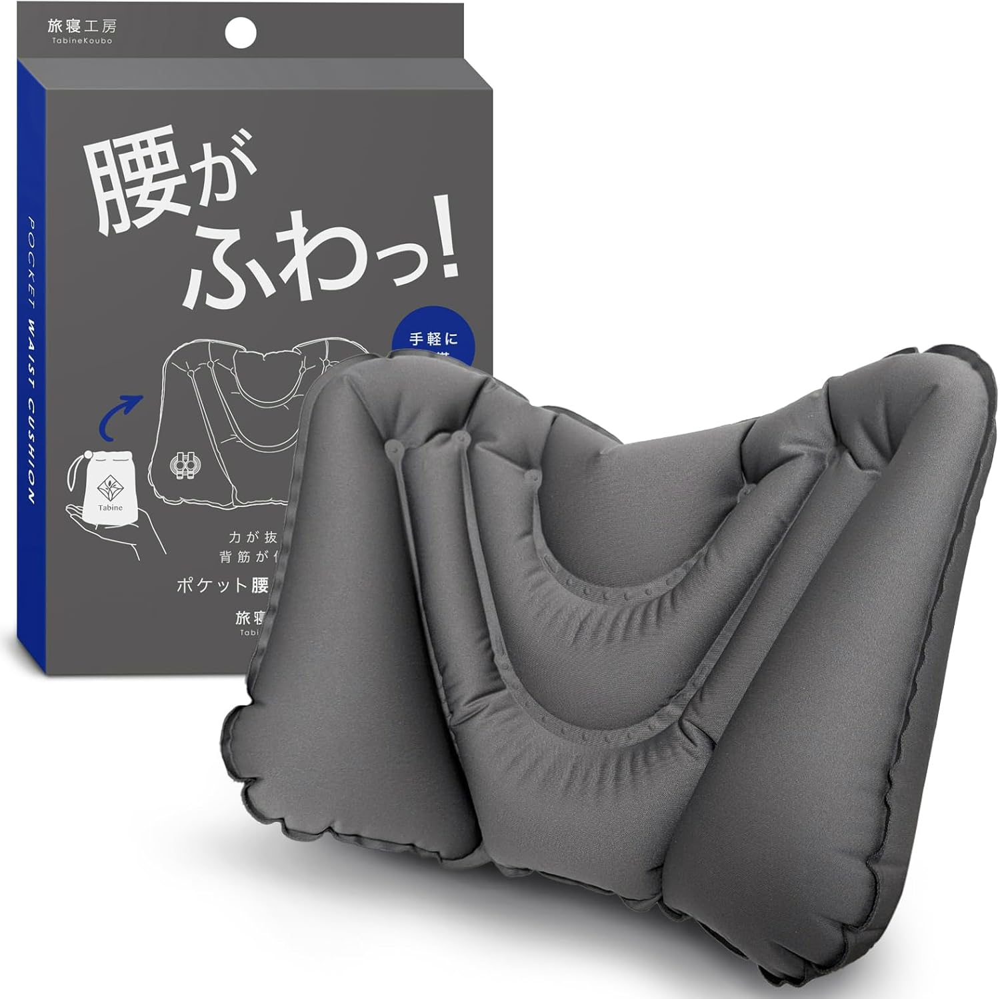
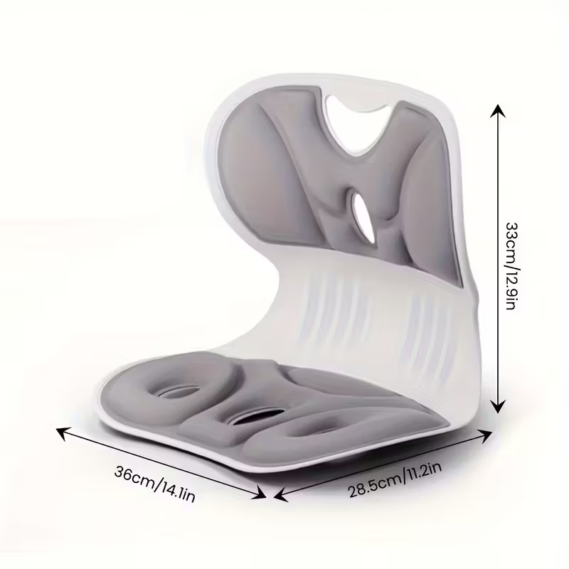
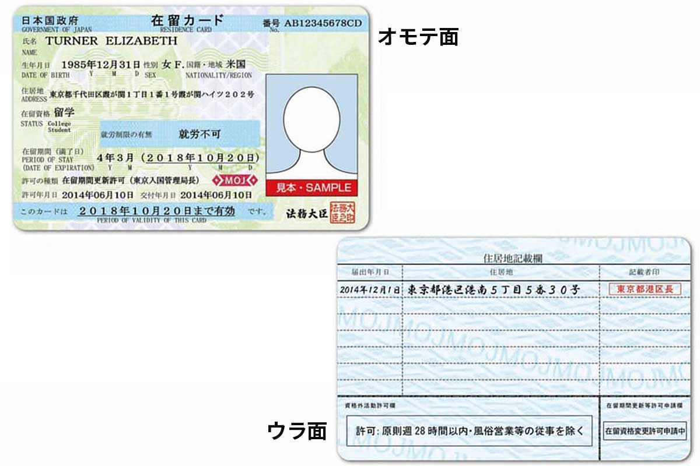
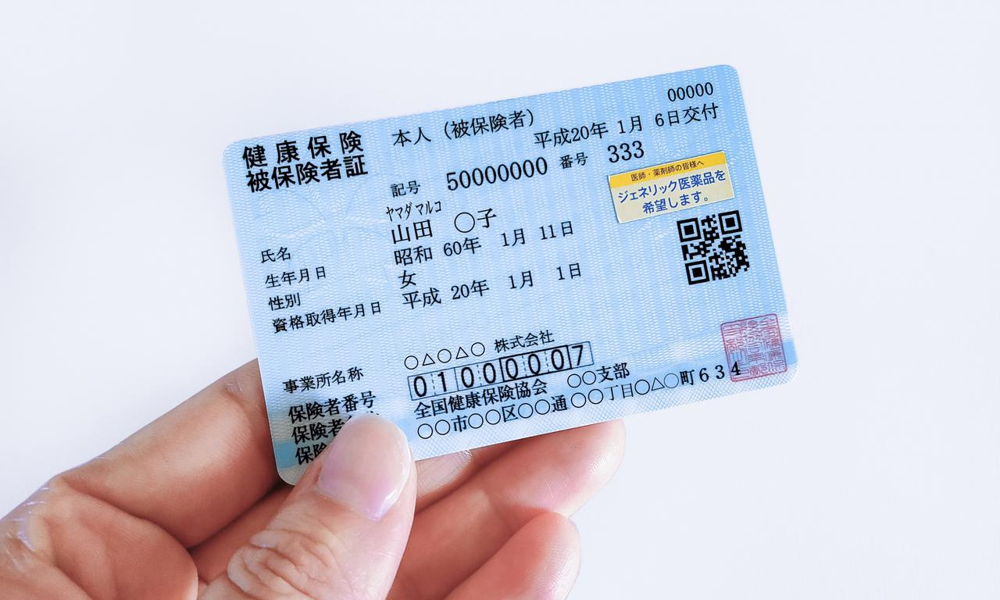
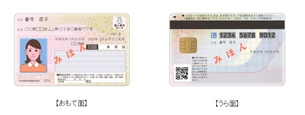
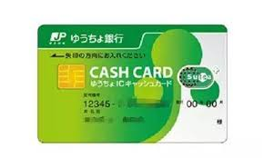

家具添置
首晚对策
还没买床前，先去便利店或百元店买个临时靠垫，或者提前在亚马逊预约「布団セット」（被褥套装），包含枕头、垫子、被子，落地即拆即用。也可以选择住酒店过渡。

临时靠垫样图

便携座垫
家具购买渠道
| 渠道 | 特点 | 链接 |
|---|---|---|
| Nitori（宜得利） | 日本的"宜家"，性价比极高，符合亚洲人审美，配送体系成熟 | 官网 |
| IKEA（宜家） | 设计感强，但配送费通常较贵，适合批量采购 | 官网 |
| 二手店 | 2nd STREET / Hard Off，淘冰箱、微波炉、洗衣机的好去处 | 2nd STREET / HARDOFF |
| Mercari（煤炉） | 日本的"闲鱼"，很多毕业学长学姐会低价甚至免费送家具（ジモティー App 也很推荐） | 官网 |
区役所住所登记 优先级：最高
落地后的第一件事必须是去区役所（City Hall）或市役所。法律规定搬入新居后 14 天内必须完成登记。

在留卡正面（オモテ面）及背面（ウラ面），背面会印上住所地址
必备材料
- 护照
- 在留卡（机场入境时发的）
必做事项
- 住所登记：在在留卡背面印上你的地址。这是后续办手机、办银行卡的"身份证"。
- 加入国民健康保险：留学生必办，医保可以报销 70% 的医疗费。记得申请"减免"，保费会非常便宜。
- My Number Card（个人编号卡）：建议现场同时申请。2026 年的日本数字化程度已很高，很多行政证明（如住民票）在便利店就能自助打印，全靠这张卡。

国民健康保险被保险者证

My Number Card 样例
如何查找区役所位置？
| 渠道 | 说明 |
|---|---|
| J-LIS 官方网站 | 最官方的入口，提供全国自治体地图检索。访问 |
| Publinet | 配有详细地图和周边设施，适合刚落地的留学生。访问 |
| Google 搜索 | 直接搜索"[你住的区或市的名字] + 役所"。注意很多大区有"出张所"或"区民事务所"，办住所登记去最近的即可。 |
电话卡
没有日本手机号，你几乎无法预约任何服务。传统"三大运营商"（Docomo/AU/Softbank）合约较贵且手续繁琐。
推荐方案（格安 SIM）
- Rakuten Mobile：申请门槛低，App 操作简单
- ahamo / LINEMO / UQ Mobile：信号稳定，价格在 2000-3000 日元左右
现在很多运营商支持 eSIM，如果你的手机支持，网上申请后几小时就能通网，不用等实体卡邮寄。
申请渠道
| 渠道 | 说明 |
|---|---|
| 线上申请 | Rakuten Mobile、ahamo、LINEMO、povo。资费便宜，常有返现活动。eSIM 最快当天通网。 |
| 家电量贩店 | Bic Camera、Yodobashi Camera 的手机柜台。有中文店员，可现场拿卡。 |
| GTN Mobile | 全中文服务，支持微信/支付宝支付，对"零日语"小白最友好。 |
Bic Camera（必客）
Yodobashi Camera（友都八喜）
GTN Mobile - 面向外国人的手机服务
办理步骤
1
确认手机兼容性（是否已解除 SIM 卡锁）
2
准备材料（在留卡等必要证件）
3
填写申请（登录官网或到店）
4
身份核验（上传在留卡正反面照片）
5
支付设定（绑定信用卡或银行卡）
6
收货与激活（约 2-3 天送达，安装 APN 配置文件）
避坑指南
- 姓名拼写一致性：片假名拼音写错或姓名顺序不符会导致审核失败
- 地址必须对齐：在留卡地址写 1-2-3，申请表填 1丁目2番3号 会被退回
- 银行卡限制：前半年"非居住者"身份，部分银行无法通过自动扣费审核。首选信用卡
- eSIM 风险：日语一般的同学建议申领实体 SIM 卡，eSIM 激活出错重置非常麻烦
- 年龄限制：未满 18 周岁通常无法独立签约
银行卡
入境不满 6 个月的外国人属于"非居住者"，绝大多数主流银行在起初半年内不给开户。
分阶段推荐
| 阶段 | 推荐银行 | 说明 |
|---|---|---|
| 必办 | 邮政银行（ゆうちょ） | 全日本门槛最低，唯一对入境不满半年留学生提供完整开户服务的银行。缴学费、交房租、收兼职工资全靠它。 |
| 进阶 | Sony Bank / 乐天银行 | 网银界面现代化，支持外币直接兑换，对外国人相对友好。 |
| 半年后 | 三菱 UFJ / 三井住友 | 入境满 6 个月后从"非居住者"转为"居住者"，办理大银行卡非常顺利。 |

邮政银行（ゆうちょ）现金卡样例
办理步骤（以邮政银行为例）
1
线上预填单（强烈建议，官网入口）
2
前往柜台（离家或学校最近的支行）
3
提交审核（核对身份、在留期限和学校信息）
4
设定密码（4 位数现金卡密码）
5
即时取存折（通常当天可拿到）
6
邮寄现金卡（约 1-2 周内寄到住所）
需要携带的材料
- 在留卡（已印好现住所地址）
- 学生证（或入学许可书暂代）
- 护照
- 印章（姓氏拼音或汉字圆章）
- 已办好的日本手机号
避坑指南
- "非居住者"限制：前半年可能无法海外汇款，半年后需去柜台申请改为"居住者"
- 姓名一致性：在留卡上只有英文拼音，银行开户名也必须是拼音
- 劝退风险：柜员问为什么来这家分行，要说"因为离家近"或"离学校近"
- ATM 限额：新开户取款限额通常较低（每天 5-10 万日元），大额支付请提前确认
- 妥善保管存折：存折第一页的复印件常被用作账户证明
实用日语速查清单
万能"金句"
| 中文 | 日语 | 罗马音 | 场景 |
|---|---|---|---|
| 不好意思/请问 | すみません | Sumimasen | 问路、叫店员、不小心撞到人 |
| 麻烦您了/请 | お願いします | Onegai shimasu | 递交材料、拜托别人办事、点菜完后 |
| 谢谢 | ありがとうございます | Arigatou gozaimasu | 得到帮助后，用长辈格式 |
便利店与超市
| 中文 | 日语 | 罗马音 |
|---|---|---|
| 不需要袋子 | 袋はいりません | Fukuro wa irimasen |
| 请加热 | 温めてください | Atatamete kudasai |
| 需要筷子/勺子 | お箸/スプーンをください | Ohashi / Supuun o kudasai |
| 这个多少钱？ | これはいくらですか？ | Kore wa ikura desu ka? |
区役所与银行
| 中文 | 日语 | 罗马音 |
|---|---|---|
| 我想办理住所登记 | 住所登録をしたいです | Juusho touroku o shitai desu |
| 我想开个账户 | 口座を作りたいです | Kouza o tsukuritai desu |
| 请再说一遍 | もう一度お願いします | Mou ichido onegai shimasu |
| 我不太懂日语 | 日本語がよく分かりません | Nihongo ga yoku wakarimasen |
紧急求助
| 中文 | 日语 | 罗马音 |
|---|---|---|
| 救命！ | 助けて！ | Tasukete! |
| 我丢了东西 | 忘れ物をしました | Wasuremono o shimashita |
| 护照丢了 | パスポートをなくしました | Pasupoto o nakushimashita |
| 请帮我叫救护车 | 救急車を呼んでください | Kyuukyuusha o yonde kudasai |
生存小贴士
- "指点江山"大法：实在不会说商品名，就用手指着，然后说 "これ (Kore)" + "お願いします"，全日本通用。
- 万能的"大丈夫です"：别人问你要不要积分卡？答：大丈夫です（不要）。不小心撞到你？答：大丈夫です（没事）。
- 翻译 App 推荐：DeepL（翻译最自然）和 Google Lens（直接扫相机翻译包装袋上的说明书或公文）。